Portfolio
Explorez une liste non exhaustive de projets où je mets en œuvre mes compétences en SIG et en programmation, de la réalisation d'étude de base à la conception de cartes interactives.
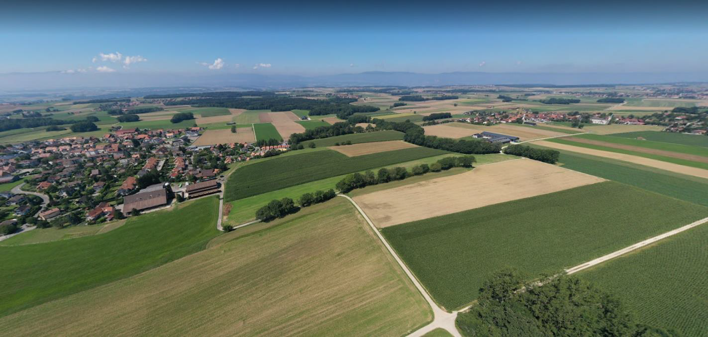
Zones intermédiaires
Études & analyses


Zones intermédiaires
Année : 2021
Étude de base
Description
L’analyse a pour objectif de classer les zones intermédiaires selon leur propension à être réaffectées en zone à bâtir en fonction de leur situation et de leur occupation actuelle. Dans un second temps, les exigences de dimensionnement de l’art. 15 LAT ont été prises en compte, en particulier la clause du besoin, qui devra être documentée pour chaque projet en temps et en lieu. Les zones intermédiaires sont prises en compte dans le calcul de l’inventaire cantonal des SDA car elles ne sont pas considérées comme des zones à bâtir.
Elles possèdent des caractéristiques diverses : taille, situation, existence ou absence de constructions, desserte, importance pour la production agricole, etc. Certains exemples récents (Noville, PACom) ont confirmé que la part de construit d’une zone intermédiaire comme son emplacement au regard du territoire bâti ont un impact direct sur sa réaffectation future consécutive à une pesée des intérêts.
En l’occurrence, plus une zone intermédiaire est bâtie et/ou incluse dans le tissu bâti, plus la probabilité qu’elle soit réaffectée en zone à bâtir est importante. À l’inverse, les zones intermédiaires isolées et non bâties ne devraient pas, en règle générale, être réaffectées à terme en zone à bâtir car de telles zones ne sont plus conformes à la législation fédérale.
Compétences
- ArcGIS Pro
- FME
- Aménagement du territoire
- Rapport
- Surface d'assolement
- Statistiques
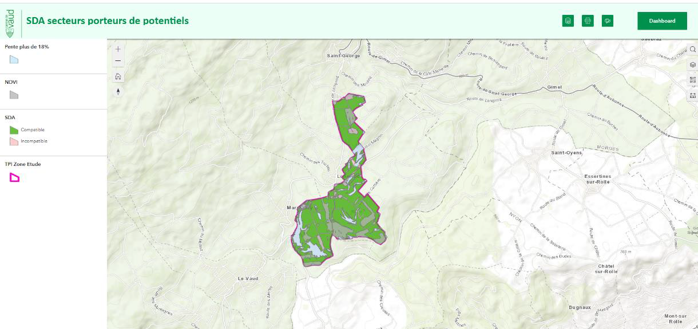
Surface imperméable en SDA
Études & analyses


Surface imperméable en SDA
Année : 2023
Étude de base
Description
Objectif Principal : Ce projet géomatique avait pour objectif d'identifier de nouvelles surfaces d'assolement (SDA) dans le canton de Vaud en tenant compte de critères spécifiques tels que la perméabilité des sols et la pente. En utilisant des outils SIG et des techniques de traitement d'image, le projet visait à améliorer l'inventaire des SDA dans le cadre de la révision territoriale du canton.
Rôle dans le Projet : En tant que seul contributeur du projet, j'ai pris en charge toutes les phases, de la conception à la mise en œuvre. Cela incluait la recherche de méthodologies appropriées, le développement des outils de traitement des données, la gestion de projet et l'analyse des résultats.
Outils et Technologies Utilisés : Le projet a fait appel à une variété d'outils et de technologies, notamment ArcGIS Pro et ArcGIS Online pour l'analyse spatiale, FME pour le traitement des données, et Python pour l'automatisation des tâches. De plus, des données LiDAR et des images satellite Sentinel 2 ont été utilisées pour la génération de modèles de pente et l'identification des surfaces imperméables.
Étapes de Développement :
L'utilisation de la binarisation par seuillage automatique pour affiner la détection des surfaces imperméables, combinée à l'intégration de différentes sources de données géospatiales, a représenté une innovation significative dans ce projet. Cela a permis de réduire la marge d'erreur et d'améliorer la précision des résultats.
Compétences
- Aménagement du territoire
- Gestion de projet
- FME
- Python
- ArcGIS Pro
- ArcGIS Online
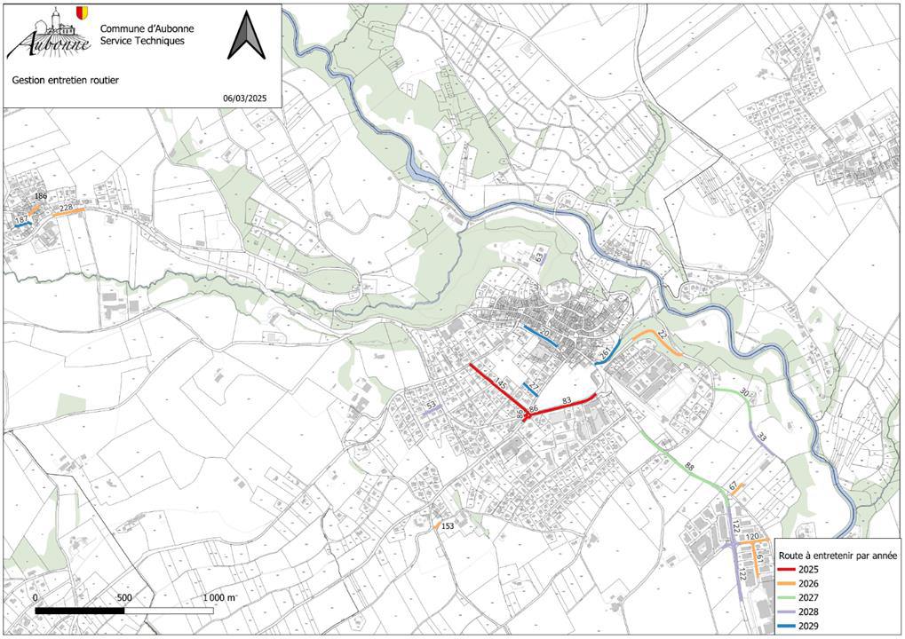
Plan directeur d’entretien des routes communales
Projets territoriaux
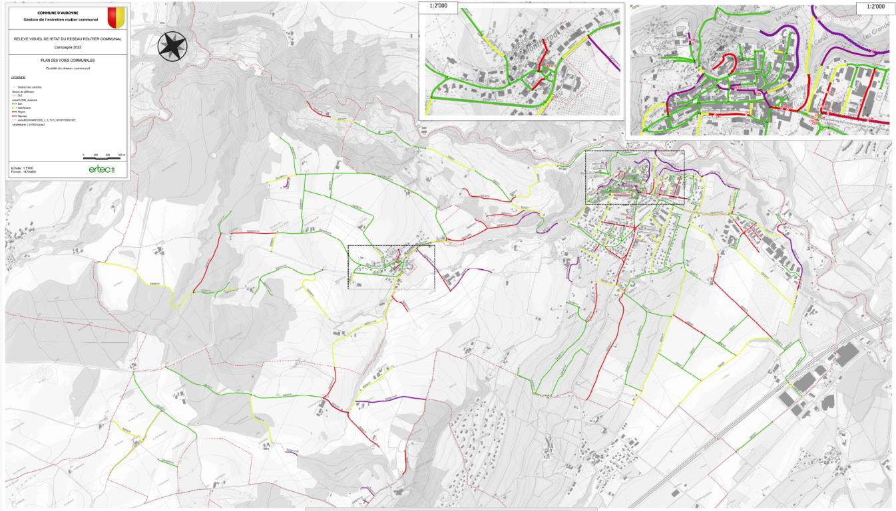
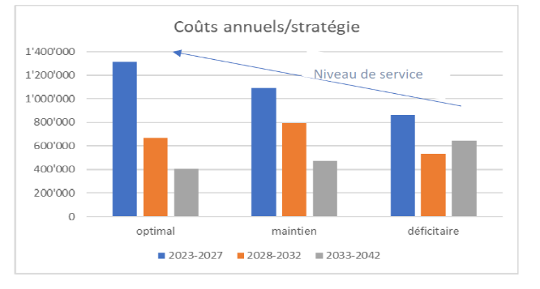
Plan directeur d’entretien des routes communales d’Aubonne 2025–2029
Année : 2025–2029
Projets territoriaux
Description
Objectif principal : Élaborer un plan quinquennal d’entretien du réseau routier communal pour préserver et améliorer l’état des chaussées, prioriser les interventions, mettre en œuvre la stratégie d’entretien de maintien (budget moyen d’environ 1,1 M CHF/an) et disposer d’un document opérationnel pour la planification pluriannuelle.
Rôle dans le projet : Chargé de projet SIG et développement territorial. Interface technique entre Ertec SA et les services communaux, intégration du diagnostic du réseau dans le SIG, conception d’un système de priorisation multi-critères, élaboration du plan 2025–2029 et rédaction du préavis municipal « Entretien des routes communales ». Suivi des bureaux mandataires pour la phase chantiers.
Outils et technologies utilisés : QGIS, base PostgreSQL/PostGIS, tableurs (Excel), SIG web / géoportail.
Étapes de développement :
Compétences
- Analyse et gestion d’un réseau d’infrastructures à l’échelle communale.
- Conception d’indicateurs et de méthodes de priorisation dans un SIG.
- Croisement données techniques / contraintes budgétaires.
- Gestion de projet avec mandataires externes.
- Appui à la décision pour les élus.
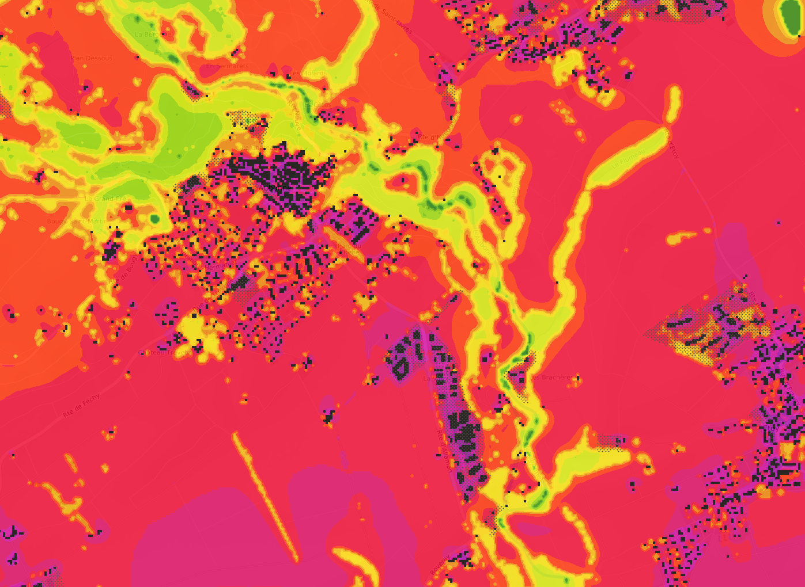
Plan énergie-climat communal (PECC)
Projets territoriaux
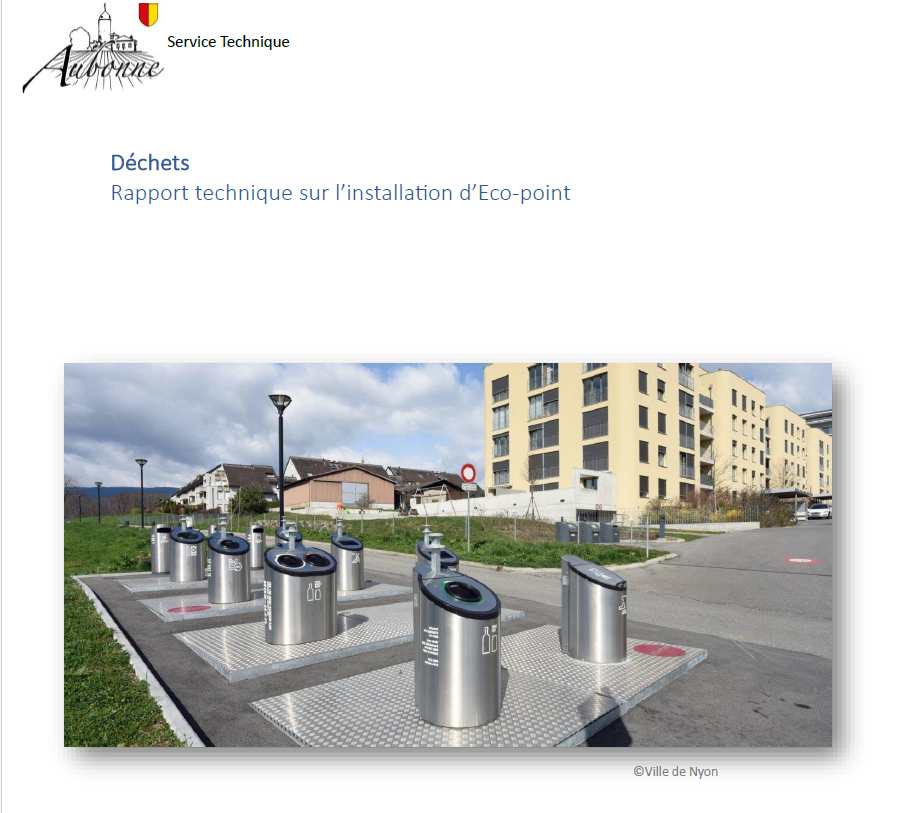
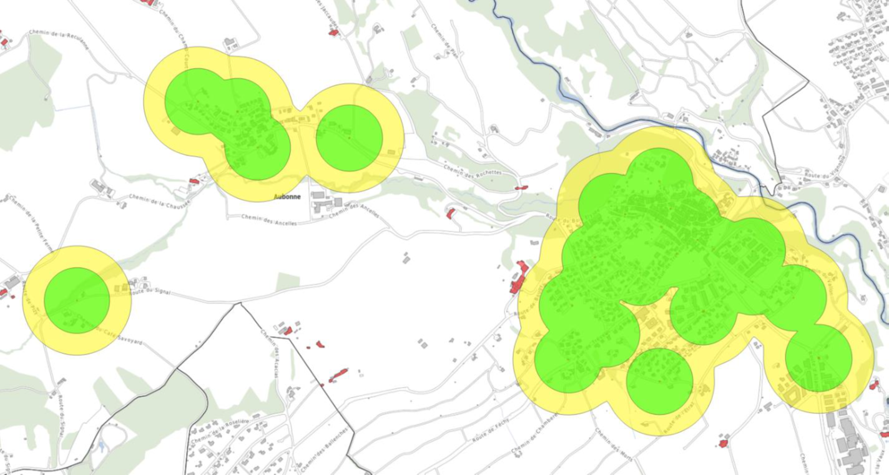
Plan énergie-climat communal (PECC)
Année : 2024 – en cours
Projets territoriaux
Description
Objectif principal : Élaborer et mettre en œuvre le Plan énergie-climat communal (PECC) d’Aubonne pour dresser un diagnostic climat–énergie–biodiversité, définir et prioriser des mesures opérationnelles et organiser la mise en œuvre et le suivi des mesures avec la Municipalité, les services communaux, les mandataires et la population.
Rôle dans le projet : Porteur technique du PECC pour la commune. Production de cartes et d’indicateurs pour le diagnostic, participation à la définition et à la hiérarchisation des mesures, suivi des mandataires externes, coordination interne, animation d’ateliers et journées de sensibilisation, et suivi de la stratégie communale climat–énergie dans la durée.
Outils et technologies utilisés : SIT communal (QGIS + PostGIS), données cantonales et communales, tableurs / outils bureautiques, géoportail communal.
Étapes de développement :
Compétences
- Diagnostic territorial.
- Aide à la décision et hiérarchisation des actions.
- Gestion et coordination de projet avec mandataires externes.
- Intégration des enjeux environnementaux dans les outils SIG.
- Animation et sensibilisation du public et des élus.
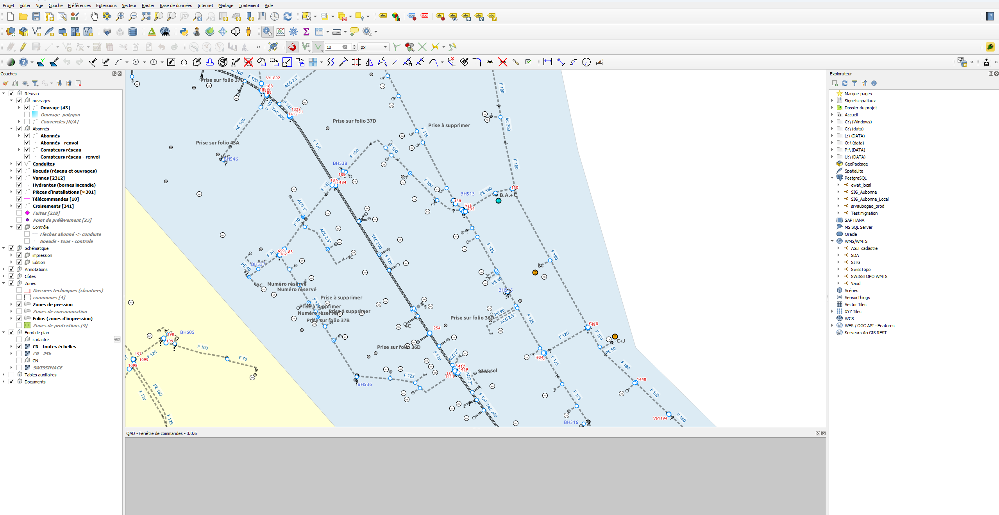
Système d’Information du Territoire communal
Projets territoriaux
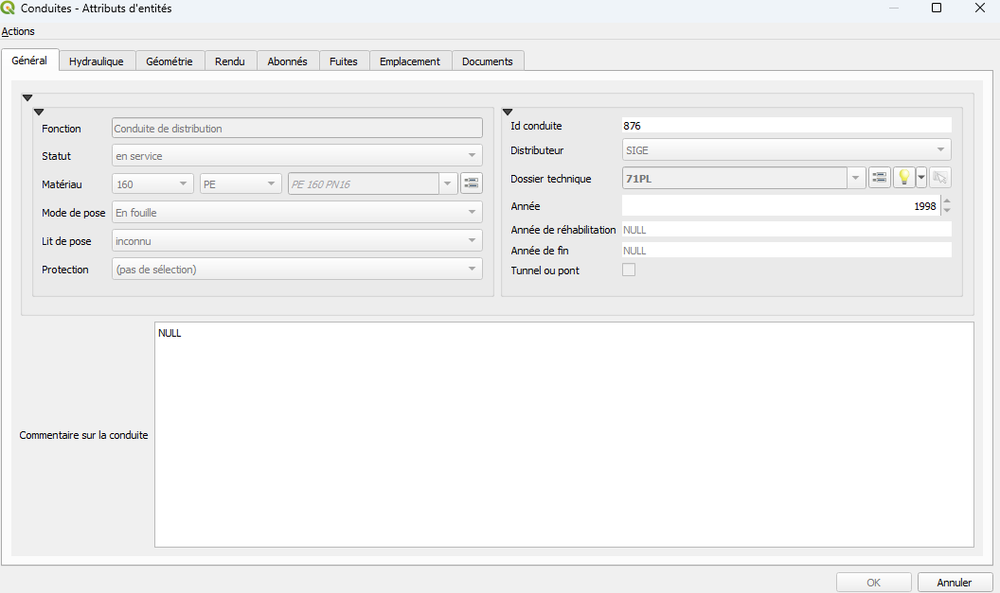
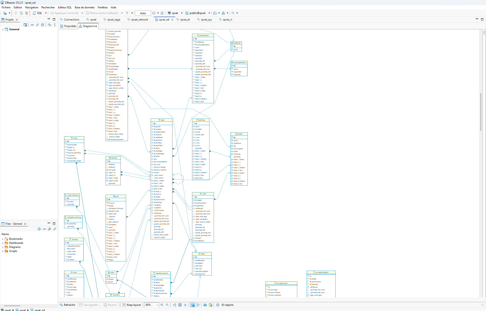
Conception et mise en place du Système d’Information du Territoire communal
Année : 2024
Projets territoriaux
Description
Objectif principal : Concevoir, mettre en place et administrer le Système d’Information du Territoire (SIT) de la commune d’Aubonne afin de suivre l’évolution du territoire, centraliser et partager les géodonnées communales, assurer l’interopérabilité avec les données cantonales et le géoportail intercommunal, répondre aux exigences légales et améliorer le service au public via des géoportails et cartes à jour.
Rôle dans le projet : Porteur du projet et chef de projet technique. Conception de l’architecture et du modèle de données, choix et paramétrage des outils, définition des règles de gestion, coordination des migrations et des partenaires, et responsabilité des décisions techniques (architecture, priorisation, organisation du géoportail et profils utilisateurs).
Outils et technologies utilisés : QGIS, PostgreSQL/PostGIS, FME, serveur cartographique intercommunal (CartoJuraLeman / viageo.ch), flux WMS/WFS et imports réguliers des données cantonales.
Étapes de développement :
Compétences
- Mise en place et administration d’un SIT communal (architecture, modèles de données, droits d’accès, interopérabilité).
- Modélisation et structuration de bases de données géographiques (réseaux, infrastructures, cadastre souterrain, standards SIA).
- Automatisation des flux de données avec FME.
- Gestion de projet géomatique transversal (audit, migration, coordination des partenaires).
- Conduite du changement et accompagnement des utilisateurs.
- Appui à la décision territoriale (planification, priorisation, conformité légale).
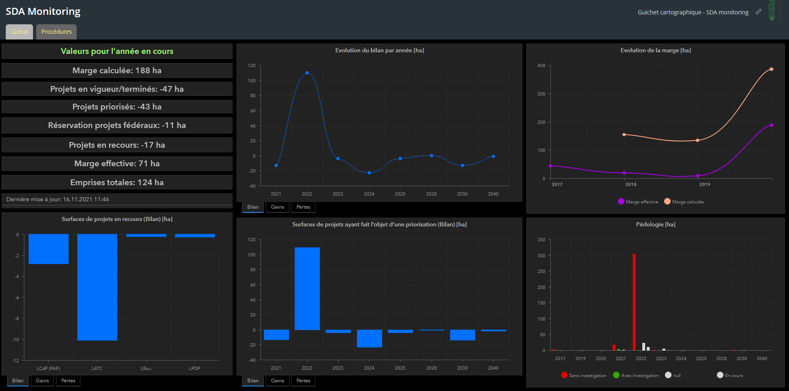
Monitoring SDA
Applications & outils
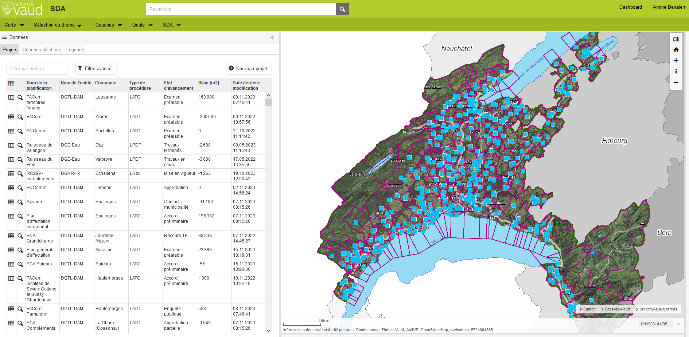
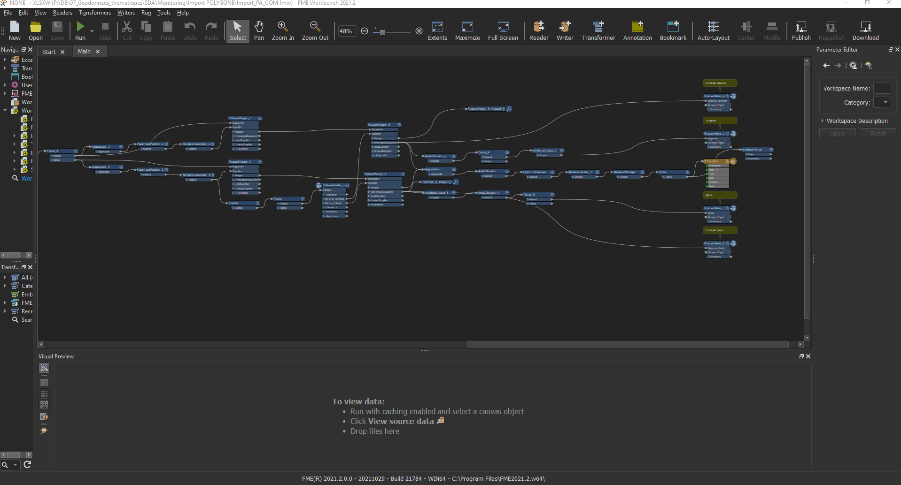
Monitoring SDA
Année : 2022
Applications & outils
Description
Objectif Principal : Le projet Monitoring SDA visait à créer un Géoportail permettant aux chefs de projet de notifier leurs emprises en matière de SDA afin de surveiller ces emprises au fil du temps.
Rôle dans le Projet : En tant que membre de l'équipe, j'ai été chargé de gérer la base de données, de suivre et d'intégrer les géodonnées dans le Géoportail conformément aux besoins des chefs de projet, ainsi que de créer le tableau de bord pour la visualisation des données.
Outils et Technologies Utilisés : Le projet a été développé en utilisant des technologies telles qu'Oracle Exadata pour la gestion de la base de données, ArcGIS Pro et ArcGIS Online pour la visualisation et l'analyse géospatiale, ainsi que SQL et FME pour le traitement et l'intégration des données.
Étapes de Développement :
Compétences
- Gestion de base de données / nœud SDE Oracle
- FME
- ArcGIS Pro
- ArcGIS Online

Where2play : application mobile
Applications & outils
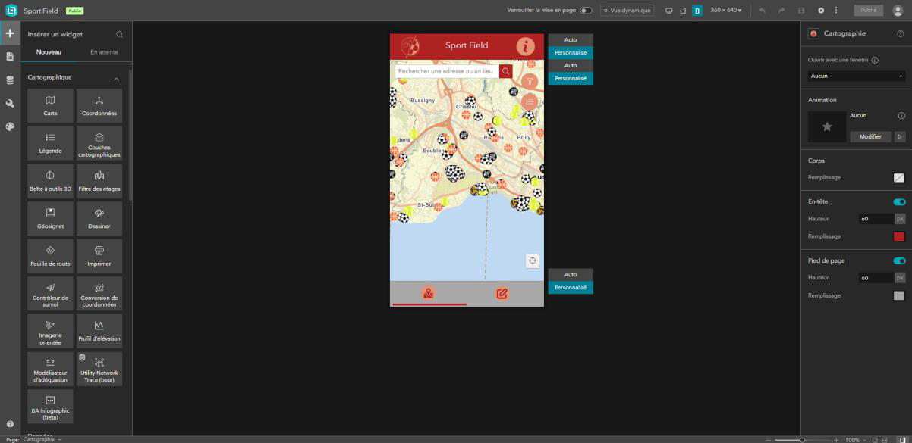
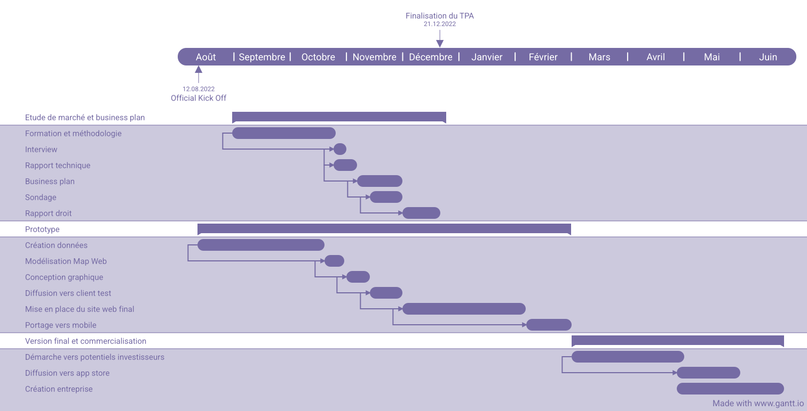
Where2play : application mobile
Année : 2021
Applications & outils
Description
Objectif Principal : Where2Play est une application mobile conçue pour permettre aux utilisateurs de localiser les terrains de sport à proximité de leur emplacement. En outre, cette application offre la possibilité de créer des événements sportifs, facilitant ainsi l'organisation de tournois et d'autres activités similaires.
Rôle dans le Projet : En tant que porteur du projet, j'ai assumé la responsabilité de la création de l'application elle-même ainsi que de la gestion de l'ensemble du processus. Cela incluait la conception, le développement, le déploiement et la maintenance de l'application, ainsi que la coordination des différentes étapes du projet.
Outils et Technologies Utilisés : Le projet a débuté avec l'utilisation d'ArcGIS Pro et ArcGIS Online pour la création de la donnée des terrains de sport et la première version de l'application web. Par la suite, une migration vers GeoServer a été effectuée pour la gestion des données spatiales. Le développement de l'application mobile a été réalisé en utilisant JavaScript et OpenLayers, avec une base de données PostgreSQL. Enfin, une Progressive Web App (PWA) a été créée pour assurer la compatibilité avec les appareils mobiles.
Étapes de Développement :
Compétences
- Gestion de projet
- ArcGIS Pro
- ArcGIS Online
- HTML/CSS
- JavaScript / OpenLayers
- Geoserver
- Gestion de base de données / PostgreSQL
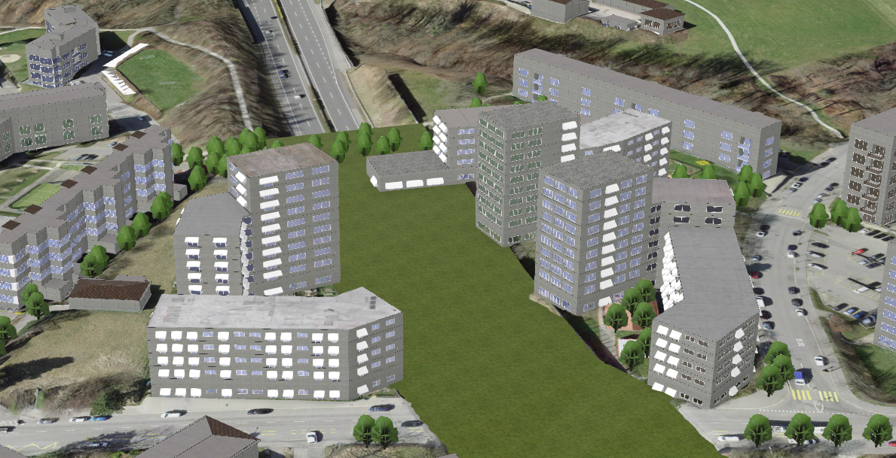
Couverture de l’autoroute A9
Applications & outils
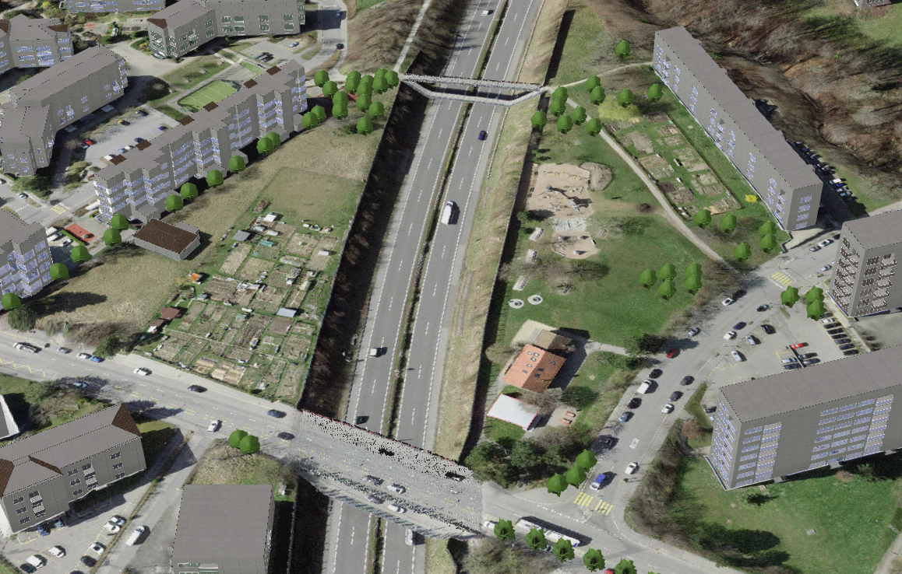
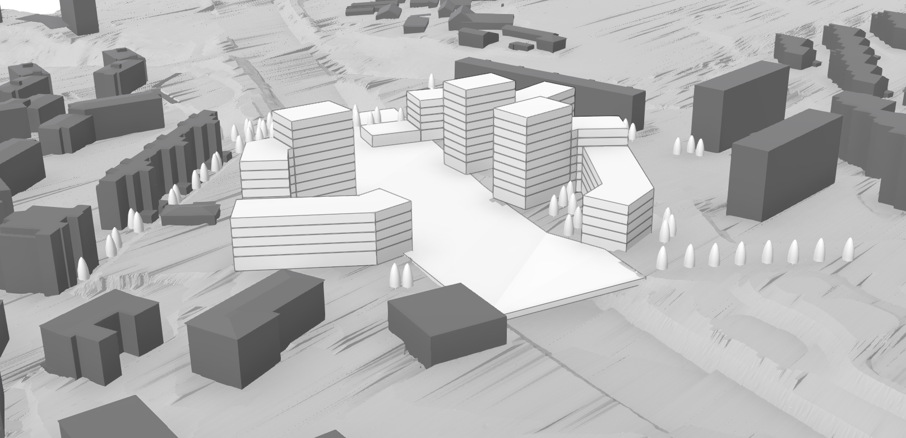
Couverture de l’autoroute A9
Année : 2022
Géodonnées 3D
Description
Objectif Principal : Ce projet avait pour objectif de créer une maquette numérique 3D d'un quartier aux Boveresses, avec pour idée principale de visualiser l'impact et l'ampleur de la couverture de l'autoroute qui sépare le quartier en deux. L'objectif était de permettre aux parties prenantes de se rendre compte de l'aspect du quartier une fois la couverture de l'autoroute réalisée, et de faciliter ainsi la planification et la prise de décision.
Rôle dans le Projet : Mon rôle dans ce projet était de concevoir et de créer la maquette numérique 3D du quartier, ainsi que de développer un site web interactif permettant aux utilisateurs de visualiser la maquette en 3D. De plus, j'ai été chargé d'intégrer la fonctionnalité de visualisation en réalité virtuelle (VR) pour offrir une expérience immersive aux utilisateurs.
Outils et Technologies Utilisés : Pour la création de la maquette numérique 3D, j'ai utilisé des outils tels que ArcGIS Pro et ArcGIS Online.
Étapes de Développement :
L'utilisation de la réalité virtuelle pour permettre aux utilisateurs de visualiser le projet de manière immersive constitue l'élément innovant de ce projet. De plus, la génération des textures de manière procédurale a permis d'optimiser le processus de création de la maquette numérique.
Compétences
- ArcGIS Pro
- ArcGIS Online
- Traitement de géodonnées 3D
- Réalité virtuelle
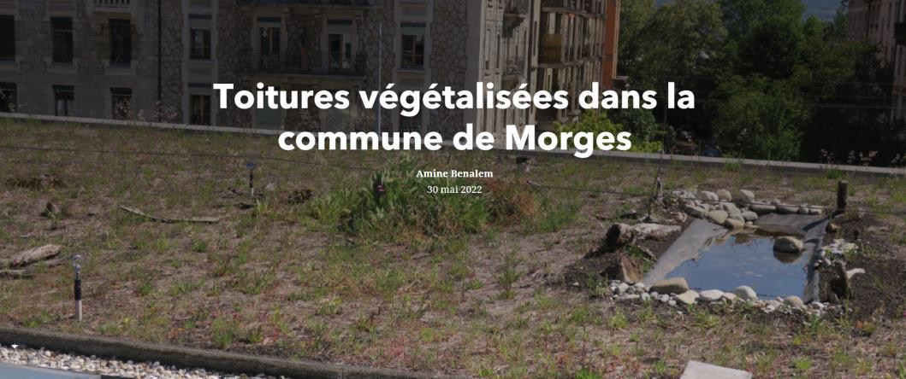
Végétalisation des toitures de Morges
Études & analyses
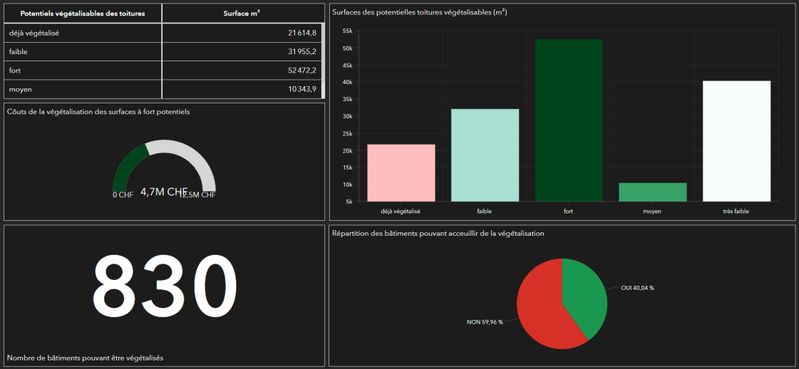
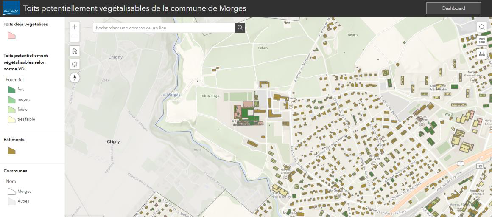
Végétalisation des toitures de Morges
Année : 2021
Études & analyses
Description
Objectif Principal : Le projet avait pour objectif d'identifier les toits de la commune de Morges qui étaient propices à une végétalisation. Cela impliquait l'analyse des données LiDAR et le traitement SIG pour repérer les toits avec des pentes adaptées. En utilisant ArcGIS Pro, les toits répondant aux critères spécifiés, notamment ceux avec des pentes inférieures à 15°, ont été identifiés et classés. La carte résultante a été publiée en ligne accompagnée d'un tableau de bord interactif et d'une StoryMap pour faciliter la compréhension des résultats.
Rôle dans le Projet : En tant que seul membre de l'équipe travaillant sur ce projet, j'ai pris en charge toutes les étapes, de l'analyse des données à la publication en ligne des résultats. Cela incluait la recherche et le développement de la méthodologie appropriée, le traitement des données LiDAR et raster, ainsi que la création des outils de visualisation comme le géoportail, le dashboard et la StoryMap.
Outils et Technologies Utilisés : Le projet a principalement utilisé ArcGIS Pro pour l'analyse SIG, ainsi qu'ArcGIS Online pour la publication des résultats en ligne. Le traitement des données LiDAR et raster a été effectué pour identifier les toits potentiels à végétaliser. De plus, l'indice de compacité de Gravelius a été utilisé comme critère de classification.
Étapes de Développement :
Compétences
- Environnement
- ArcGIS Pro
- ArcGIS Online
- Traitement LiDAR
- Traitement Raster